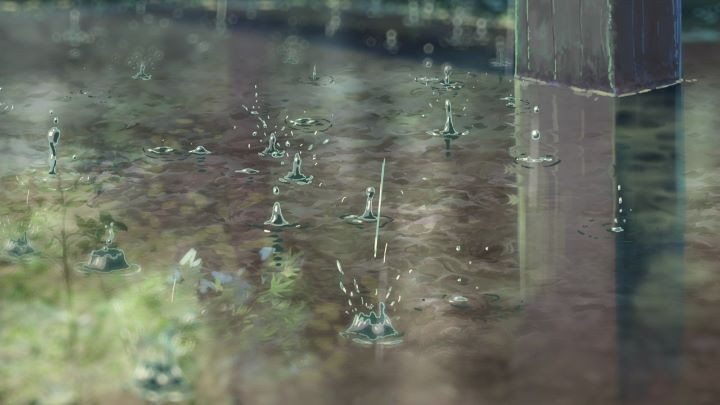

The average anime expert should already be familiar with the name Makoto Shinkai. Entering the anime industry by animating and directing his own short film by himself on his Macintosh computer, he has since made a number of films, each met with some degree of praise. He is an acquired taste however, being about truthful feelings of love and emotion as opposed to story and excitement. Thankfully, I personally find 2013 work, "A Garden of Words," to be one of his best yet (and yes, I have seen "Your Name." as of this writing in 2018). And if there's any indication of Sentai Filmworks releasing a dubbed version only months after the Japanese theatrical release, you will think so too. At under an hour long, this compares best to "5 centimeters per second", another film Shinkai made, except this has one long story instead of short pieces. It's about a student who finds himself realizing his desire to become a shoemaker. A strange career choice, but he realizes it is truly what he wants. When going to the park on a rainy day during class to sketch shoe designs, he meets a well-dressed woman almost twice his age drinking beer and eating chocolate. Both strange people, they of course develop a friendship, and meet every day it rains. We see more of their past, their hopes and dreams, and their relationship grow and fade. Shinkai doesn't like making stories like your average film, but tells stories that feel like real people, with real problems and emotions. Ok, that's not entirely true: not many people actually feel quite as hopelessly romantic as the characters he animates. Although this film is mostly about these two people talking to each other, it felt like it had more of a story than some of his works, while still maintaining the emotions he wants to get across. It's a balance of the two elements he's used in various works, and mixed with the general simplicity and realism of the film, it works perfectly. It feels more rewarding than some of his other works, and more enjoyable, despite yet another somewhat bittersweet ending. Yes, a relationship between people of such different ages is somewhat taboo, but it exists, and there's a purity in how it is portrayed here. Being the first Shinkai I saw in Bluray, it is gorgeous. Rain and plant effects are everywhere, and it truly is stunning to see in animation. Character designs are still simple, as all his works, but they've gotten a lot better since his original works. Audio uses soft piano plucks and similar themes, plus the ending vocal song, again a standard of his work. The English dub is good, although a couple lines are soft enough for you to miss what they said.  Makoto Shinkai is a predictable man by now, but he slowly masters the genre he created for himself each time. I can't say "The Garden of Words" is his most memorable work, but it is his best executed. So far.
- "Ani" More reviews can be found at : https://2danicritic.github.io/ Previous review: review_The_Garden_of_Sinners Next review: review_The_Girl_Who_Leapt_Through_Time